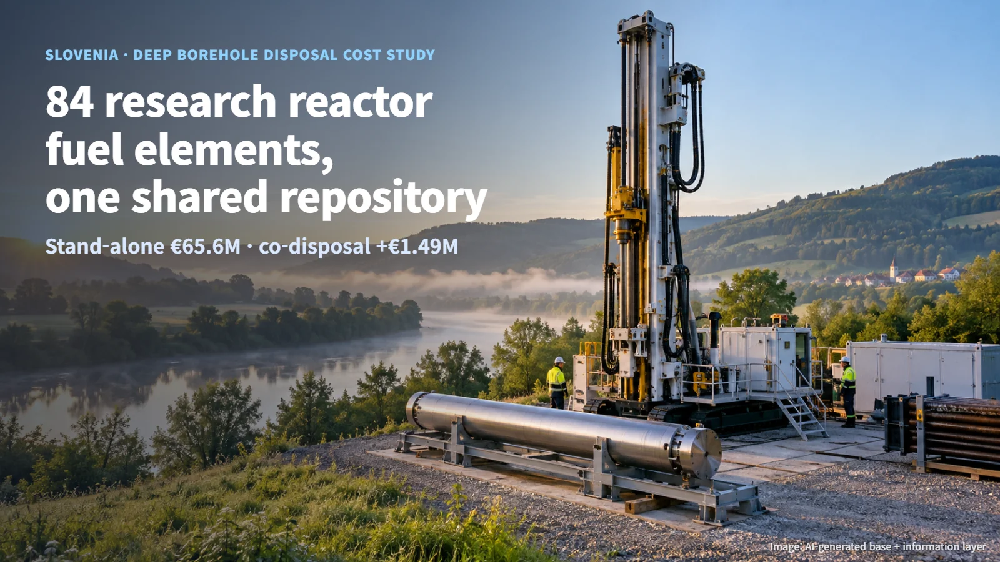
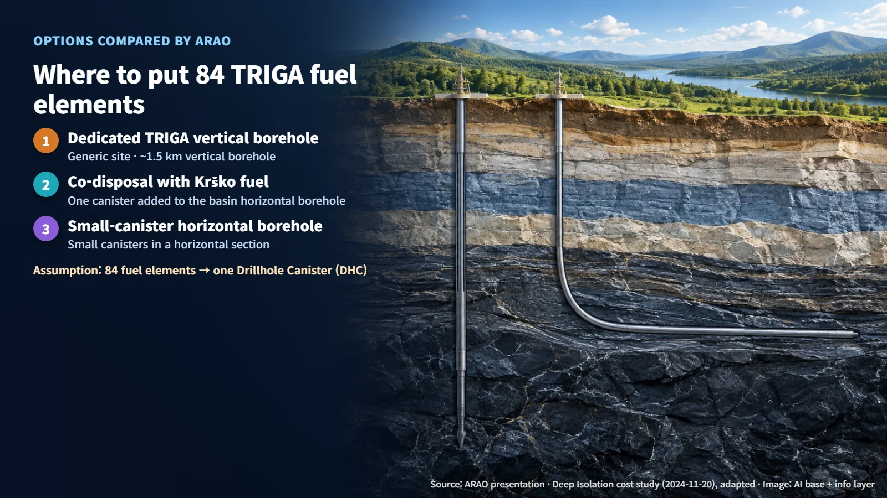
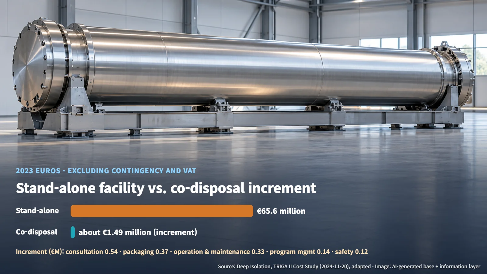
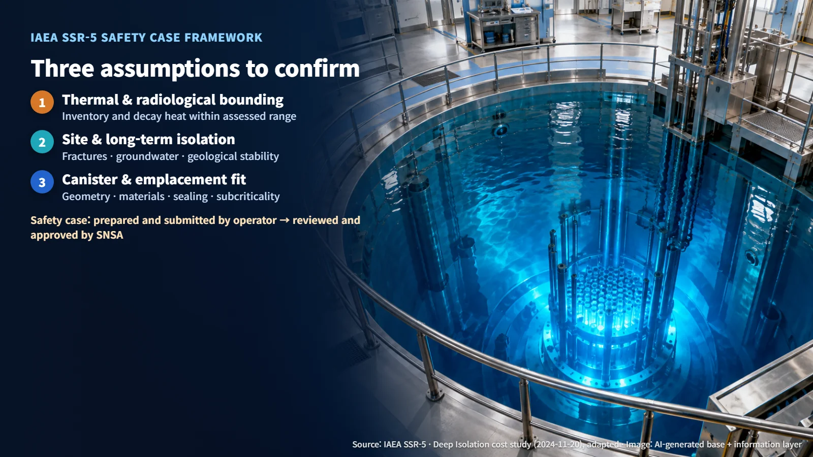

Slovenia · Spent Fuel Disposal
84 Research Reactor Fuel Elements, One Shared Repository: Slovenia's TRIGA Deep Borehole Disposal Cost Study
A Deep Isolation cost study for ARAO finds that adding Slovenia's 84 TRIGA research reactor fuel elements to the Krško deep borehole facility would cost far less than building a stand-alone repository.
When people picture a spent fuel repository, they usually imagine a vast facility deep underground. So what is the sensible approach for a country that has only a very small amount of fuel to dispose of? Slovenia now has a cost study that addresses exactly that question. On 23 October 2026, World Nuclear News (WNN) reported on a spent fuel disposal cost assessment that Deep Isolation carried out for ARAO, Slovenia's radioactive waste management agency. The article followed up on the original announcement made on 14 October.

A Small Research Reactor and Its 84 Fuel Elements
The study covers fuel from the TRIGA II research reactor operated by the Jožef Stefan Institute (JSI). A research reactor is a small reactor used for experiments, training and research rather than for generating electricity.
According to a 2025 ARAO presentation, 84 TRIGA fuel elements remain to be managed and disposed of. They comprise 71 standard spent elements and 9 fresh elements, plus fuel followers — the fuel sections attached to control rods — of which 3 are spent and 1 is fresh. In 1999 the reactor returned 219 spent fuel elements to the United States. The reactor's operating approval runs to 2034, with a possible extension to 2043, and the cost study uses a 2043 shutdown as its calculation assumption. Those 84 fuel elements, sitting in the institute's pool, are the starting point for the whole study.
Disposal in Deep Boreholes
Deep Borehole Disposal (DBD) is a disposal concept in which canisters holding fuel are lowered into narrow holes drilled deep into the ground and emplaced in a designated section. Instead of excavating tunnels to build a mined repository, the disposal space is created by drilling rigs working from the surface.
ARAO's presentation compared three options: a dedicated vertical borehole for TRIGA fuel alone, co-disposal together with fuel from the Krško nuclear power plant, and a horizontal borehole using small canisters.

The central assumption of the cost study is that all 84 elements fit into a single Drillhole Canister (DHC). This canister was taken to be similar in geometry and cost to the Krško canisters, so the existing borehole diameter could be kept, and its thermal and radiological characteristics were assumed to fall within the range already assessed for the Krško fuel canisters. Picture one research reactor canister joining the power plant fuel canisters in the same borehole.
€65.6 Million Stand-Alone, €1.49 Million Added for Co-Disposal
The November 2024 cost report updated a 2021 TRIGA study to the same basis as a 2024 Krško study: 2023 euro prices and a work breakdown structure (WBS) aligned with EURAD. A WBS is a framework that splits costs into the same work categories — siting, design, construction, operation, closure and so on — so that options can be compared line by line.
Here are the results. A stand-alone facility for TRIGA fuel alone would cost €65.6 million in total, excluding contingency and VAT (€98.2 million including them). By contrast, adding one TRIGA canister to the Krško disposal facility carries an incremental cost of about €1.49–1.50 million (about €1.8 million including contingency and VAT). The reference case for co-disposal, the Krško basin horizontal borehole facility, costs €578.1 million; the report summary puts the increase at 0.25%, while the operator's original announcement describes it as below about 0.5%.

The incremental cost breaks down into expanded consultation with communities along the Ljubljana–Krško transport route (€0.54 million), equipment for packaging the canister at the research reactor pool (€0.37 million), operation and maintenance for the canister, transport, packaging work and one additional day of emplacement (€0.33 million), program management (€0.14 million), and calculations that supplement the scope of the existing safety assessment (€0.12 million) (Source: Deep Isolation, TRIGA II cost study, adapted).
The stand-alone option includes €16.0 million for site investigation and research and development, €10.2 million for site selection, and €4.5 million for institutional control. Just as a restaurant needs a kitchen and a license even if it serves only one guest, a disposal facility carries fixed costs however little fuel it receives. The stand-alone option assumed a vertical borehole about 1.5 km deep at a generic site and use of the institute's existing pool.
Next Steps: Testing the Assumptions and the National Program
These results sit at the cost-study stage, supporting national disposal planning. The next tasks are safety assessment, implementation planning and consultation with the regulator. The figures come from the cost file published with a date of 20 November 2024, whose text still contains a note that a final version is to be issued.
The International Atomic Energy Agency (IAEA) safety requirements for disposal, SSR-5, set out the safety case — the body of documentation that brings together site, design and assessment evidence to demonstrate a facility's safety — together with site characterization and waste acceptance criteria. Within this framework, three assumptions need to be confirmed. First, whether the TRIGA fuel's radionuclide inventory and decay heat fall within the existing assessment range. Second, whether the site's fractures, groundwater and geological stability support long-term isolation. Third, whether the canister's geometry, material compatibility and sealing performance, together with subcritical emplacement, are suitable. The operator prepares and submits the safety case, and the Slovenian Nuclear Safety Administration (SNSA) reviews and approves it.

ARAO has included mined disposal, multinational disposal and deep borehole studies in preparations for the fourth revision of the joint Slovenian–Croatian disposal program. The approach is to keep developing the mined repository plan while tracking progress in borehole disposal. The next step is to test the single-canister assumption against actual fuel and site data and to connect it to the national program and domestic regulatory consultation.
For small fuel inventories, disposal cost depends far more on the fixed cost of building a facility than on the amount of fuel. Following where one small batch of fuel ends up shows just how wide a view disposal planning has to take.